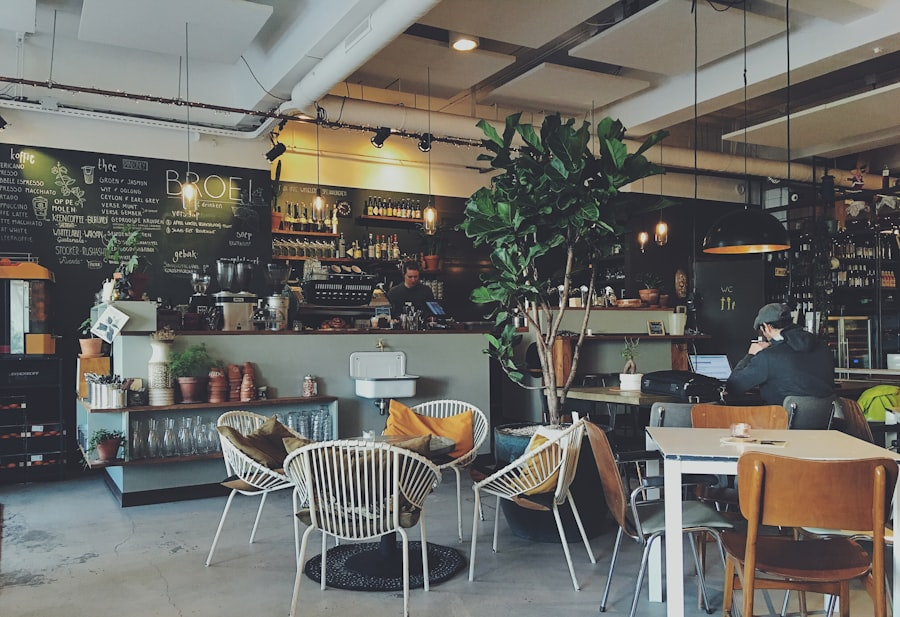
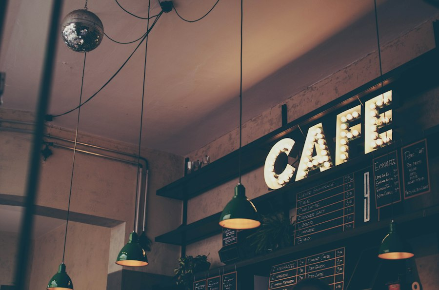
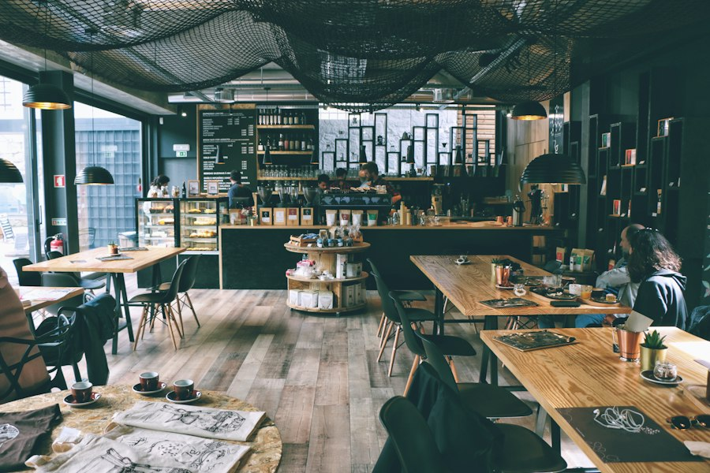

Visi Kami
Menjadi kedai kopi lingkungan paling dicintai di Indonesia — tempat dunia menemukan kekayaan kopi Nusantara dan tempat para petani dirayakan sebagai pahlawan di balik setiap seduhan.
Berakar di nusantara, diseduh dengan bangga.

Didirikan pada tahun 2018, Kedai Kopi Nusantara berawal sebagai gerobak kecil yang menjual kopi tubruk di dekat pasar Jakarta. Pendiri kami berkeliling Aceh, Toraja, Bali, dan Flores, mencicipi kopi bersama keluarga petani dan mempelajari bagaimana ketinggian, tanah, dan tradisi membentuk setiap biji kopi.
Saat ini kami bermitra langsung dengan petani kecil di Gayo, Toraja, Kintamani, dan Flores. Kami membayar dengan harga yang adil, menyangrai dalam batch kecil, dan melatih barista muda lokal — sehingga setiap cangkir mendukung orang-orang di baliknya.
Kedai kami dirancang agar terasa seperti rumah: kayu reklamasi, kursi rotan, aroma sangrai segar, dan percakapan santai tanpa terburu-buru.
Apa yang memandu setiap biji yang kami beli dan setiap cangkir yang kami sajikan.
Menjadi kedai kopi lingkungan paling dicintai di Indonesia — tempat dunia menemukan kekayaan kopi Nusantara dan tempat para petani dirayakan sebagai pahlawan di balik setiap seduhan.
Sudut yang nyaman, lampu hangat — dan orang-orang yang menyeduh harimu.


Kepala Barista
Spesialis espresso kelahiran Toraja dengan pengalaman menyeduh 8 tahun.
Ketua Latte Art
Penggemar Kintamani, pemenang Jakarta Latte Art Throwdown 2024.

Penyangrai & Pengadaan
Bekerja langsung dengan petani Gayo dan Flores dalam hal kualitas dan perdagangan adil.